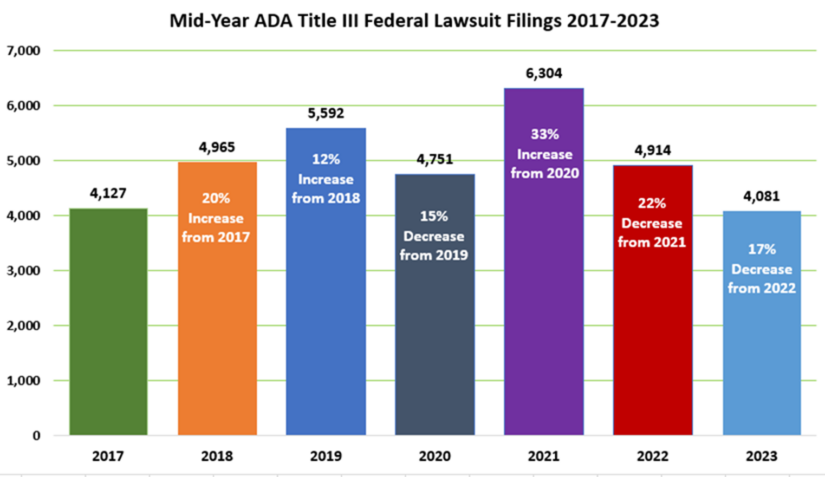
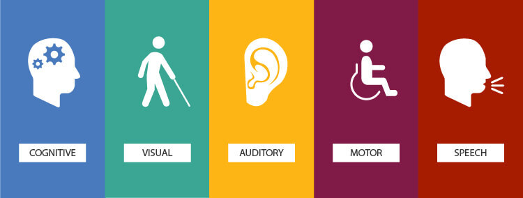
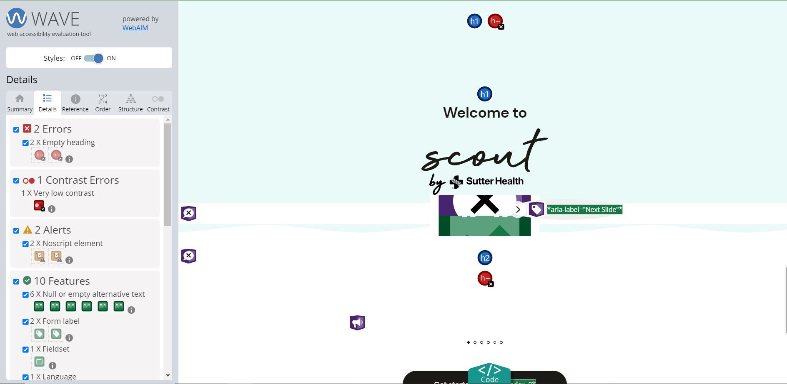

Case Study on ADA Testing

"Unlocking Project Success: The Transformative Impact of ADA Compliance on Accessibility and Beyond"
Introduction:
In today's rapidly advancing digital age, ensuring equitable access to online content has become imperative. The Americans with Disabilities Act (ADA) mandates inclusivity, extending its reach to encompass the digital realm. ADA testing, aligned with the Web Content Accessibility Guidelines (WCAG), plays a pivotal role in guaranteeing that websites and applications are accessible to all users. In this comprehensive guide, we will explore the profound importance of web accessibility, delve into the principles of ADA testing, examine common accessibility issues, and provide a detailed walkthrough on implementing ADA testing effectively with practical examples.
Understanding the Significance of Web Accessibility
1.1. Inclusivity Matters:
Web accessibility is not just a development checkbox; it's a commitment to inclusivity. Imagine a visually impaired user trying to navigate a website that lacks proper contrast or alternative text. By incorporating accessible design, we create a welcoming digital environment for users with diverse abilities.
Example:
Consider a website with poor color contrast. A visually impaired user using a screen reader may struggle to discern text from the background. Proper color contrast ensures that information is perceivable by all users.
One example of white text with a red background does not pass and one example with a darker red background does pass.
1.2. Legal Compliance:
ADA compliance is not a mere formality but a legal obligation. High-profile cases, such as Domino's Pizza facing legal consequences for an inaccessible website, underscore the importance of complying with accessibility standards.
Example:
Explore the Domino's case, where the lack of accessible features led to a Supreme Court ruling, emphasizing that the ADA applies to digital platforms. The case is known as Domino’s Pizza v. Guillermo Robles, No. 18-1539.
In a growing trend, companies are actively addressing ADA compliance, working towards enhancing the accessibility of their applications to accommodate a broader spectrum of users. The number of lawsuits filed in federal courts alleging violations of Title III of the Americans with Disabilities Act (ADA) is decreasing from its 2021 high. 2022’s final numbers showed 24.1% fewer cases filed than in the previous year. Thus far into 2023, the numbers are even fewer. 4,081 cases were filed between January and June of this year, representing a 17% drop from the 4,914 cases filed between January and June 2022. Source

1.3. Expanding Audience Reach:
Accessible websites attract a broader audience. Case studies of companies like Microsoft, which achieved increased market share after improving accessibility, demonstrate the tangible benefits of catering to a diverse user base.
Example:
Microsoft's commitment to accessibility resulted in a positive impact on its brand and user loyalty. The accessible design not only expanded their audience but also improved user satisfaction.
1.4 Types of Audience:

- Visual Impairments:
- Blindness: Users who are blind rely on screen readers to convert text into speech or Braille.
- Low Vision: Individuals with low vision may use screen magnifiers or rely on high-contrast settings.
- Barriers
- Images, controls, and other structural elements that do not have alternative text.
- Color contrast issue
- Text, images, and page layout that cannot be resized or that loose information when resized.
- Solutions
- Well-designed layout
- Highlight links or URL
- Provide descriptive alternative text for images, enabling screen readers to convey meaningful information to users who cannot see the visual content.
- Barriers
- Auditory/ Hearing Impairments:
- Deafness: Users who are deaf may rely on captions, transcripts, or sign language.
- Hard of Hearing: Individuals with partial hearing loss may benefit from amplified audio or visual alerts.
- Barriers
- If your website has audio content with video and sounds, without captions or transcripts.
- Media Players that do not display captions and do not provide volume control.
- Solutions
- Subtitle or caption in the video will be very helpful for people with disability with hearing.
- Include amplification features for audio content, allowing users to adjust volume levels based on their individual needs.
- Barriers
- Motor Disabilities/Physical:
- Limited Mobility: Users with limited dexterity or motor control may use alternative input devices such as voice commands or specialized keyboards.
- Motor Impairments: Individuals with conditions like cerebral palsy may use adaptive technologies for navigation.
- Barriers
- The website or web browser does not provide full keyboard support.
- Insufficient time limit to record or to complete tasks such as filling out of online form.
- Controls, including links with images of text, that do not have equivalent text or alternative text.
- Solutions
- Provide support for alternative input devices such as joysticks, trackballs, or adaptive keyboards that accommodate different motor abilities.
- Implement keyboard shortcuts for essential functions, allowing users to navigate through the application without relying on precise mouse movements.
- Design interfaces with larger clickable areas, buttons, and touch targets to accommodate users with limited dexterity or fine motor control.
- Barriers
- Cognitive and Learning Disabilities:
- Dyslexia: Users with dyslexia may benefit from clear typography, easy-to-read fonts, and consistent page layouts.
- ADHD: Individuals with attention disorders may require content presented in a clear and structured manner.
- Barriers
- A complex navigation mechanism
- Complex sentences that are difficult to read, unusual words that are difficult to understand
- A long passage of text without images and graphs
- Solutions
- Good designs with color harmony, contrast, and image sizes so a well-thought-out design will be a big help in this case.
- Integrate read-aloud functionality to assist users with reading difficulties in comprehending text-based content.
- Barriers
- Speech Impairments:
- Users with speech impairments may use voice recognition software or alternative communication devices.
- Stuttering and muffled speech
- Barriers
- A web-based application that relies on interaction using voice only.
- A website that offers phone numbers as the only source to communicate with the organizations.
- Solutions
- An email is an alternative way to communicate.
- Incorporate visual cues, symbols, or icons within interfaces to aid individuals with speech impairments in conveying information visually.
- Barriers
3. Levels in ADA
In the context of web accessibility testing, the terms "Level A," "Level AA," and "Level AAA" refer to the conformance levels defined by the Web Content Accessibility Guidelines (WCAG). These guidelines, developed by the Web Accessibility Initiative (WAI) of the World Wide Web Consortium (W3C), provide a set of recommendations to make web content more accessible to people with disabilities. The conformance levels help in specifying the level of accessibility a website or application achieves. Here's an explanation of each level:
- Level A (Basic Accessibility): rules with which you must comply
- Goal: The minimum level of accessibility to make content usable by many people.
- Example: Make sure images have text descriptions for people who can't see them.
- Level AA (Standard Accessibility): rules with which you should comply
- Goal: A higher level that addresses more issues, making content accessible to a broader audience.
- Example: Ensuring there's enough contrast between text and background so that everyone can read it easily.
- Level AAA (Enhanced Accessibility): rules with which you may comply
- Goal: The highest level, providing the most comprehensive accessibility for a top-notch user experience.
- Example: Offering sign language interpretation for videos to make content accessible to users with hearing impairments.
In essence, it's like building steps. Level A is the first step, ensuring the basics. Level AA is the second step, addressing more issues for a broader audience. Level AAA is the top step, going even further to create the best possible experience for users with disabilities. Organizations often aim for at least Level AA to strike a good balance between inclusivity and practicality.
4. Challenges
In a healthcare domain project, we successfully attained ADA compliance. Initially, our emphasis on this aspect was limited, but as the project progressed, we recognized its significance in software development. Our goal was to achieve ADA accessibility up to level AA, and we have accomplished this with notable success. However, we have identified potential barriers to accessibility within the application. Common challenges included:-
- Incorporating ADA considerations into the project during its course - We started working on ADA towards the end of the project because of which multiple things got disturbed.
- Awareness and Education
- Integration with the Development Process
- Tool Selection
- Non-descriptive alt text
- Insufficient keyboard navigation
- Lack of proper ARIA roles
- Impacting users with visual and motor impairments
5. ADA Testing Approach:
- Comprehensive Accessibility Audit: Conducted a thorough accessibility audit using automated tools like Wave and manual testing using a screen reader to identify and address issues related to WCAG guidelines.
- User-Centric Testing: Engaged users with diverse disabilities in usability testing sessions to gather firsthand feedback on their experience and challenges faced.
- Implementation of Best Practices: Implemented best practices for web accessibility, including proper semantic HTML, descriptive text alternatives, keyboard navigation enhancements, and ensuring compatibility with screen readers.
- Dynamic Font Testing: Dynamic font in the context of ADA likely refers to a feature or practice that allows users to customize the font settings dynamically based on their preferences or needs. To test this dynamic font we need to test the font accommodation on different devices with varying screen sizes. Confirm that the font adjustments maintain responsiveness and readability across devices.
6. Benefits Realized:
- Legal Compliance: Achieved ADA compliance, mitigating legal risks and ensuring alignment with the Web Content Accessibility Guidelines (WCAG).
- Enhanced User Experience: Substantially improved the user experience for individuals with disabilities, fostering a more inclusive and welcoming digital environment.
- Positive User Feedback: Received overwhelmingly positive feedback from users with disabilities, highlighting the transformative impact of the accessibility improvements on their ability to navigate and engage with the application.
- Market Expansion: Opened doors to a broader user base, attracting users who prioritize applications with a commitment to accessibility and inclusive design.
7. Lessons Learned:
- ADA implementation should commence right from the beginning.
- Ensuring ADA compliance for the application becomes particularly crucial when the client is based in the United States, especially within the healthcare domain.
- Requirements should be gathered initially and designs should be frozen accordingly and should be ADA compliant.
- User involvement is crucial for understanding and addressing diverse needs.
8. Implementing ADA Testing Effectively
Step 1: Learn the Basics
- Understand ADA - Familiarize yourself with the Americans with Disabilities Act (ADA) and why it's important for digital accessibility.
- Grasp Accessibility Fundamentals - Learn the basics of web accessibility principles, like making content perceivable, operable, understandable, and robust.
Step 2: Use ADA Testing Tools
- Automated checks - Use ADA testing tools like Axe, WAVE, or Pa11y to automatically scan your website for common accessibility issues.
- Manual Checks: Conduct manual tests, including keyboard navigation, screen reader testing, and checking color contrasts.
Step 3: Prioritize and Fix Issues
- Sort Issues -Prioritize issues based on their impact, categorizing them as Level A, AA, or AAA according to severity.
- Address Critical Issues: Start with critical issues, especially those at Level A, and create a plan to fix them.
Step 4: Integrate Accessibility in Workflows
- Design Inclusively: Incorporate accessibility into the design phase, ensuring wireframes and prototypes consider inclusive design.
- Code Accessibly: Train developers to use coding practices that enhance accessibility, such as semantic HTML and ARIA roles.
Step 6: Involve Users with Disabilities
- User Feedback: Engage individuals with disabilities in the testing process to gather valuable feedback on their user experience.
- Improve Based on Feedback: Use user feedback to improve the accessibility of your website.
Step 7: Document and Train Teams
- Create Documentation: Document your accessibility standards, guidelines, and best practices for reference.
- Training: Regularly train teams on ADA compliance and accessibility best practices.
Step 8: Regular Monitoring
- Schedule Audits: Set up regular accessibility audits to ensure ongoing compliance.
- Stay Updated: Keep abreast of changes in accessibility standards and adjust your practices accordingly.
9. One with real-time example:
- On one of our health domain projects, we performed ADA testing and got a chance to hand on it. Let me share my experience and the learning I got from there. Hope that will help you start ADA testing on your project.
1) Scan the web app using the tool WAVE
- Install the WAVE plugin in your Chrome browser
- Install Extension: Add the Wave accessibility extension to your browser.
- Visit a Web Page: Go to the webpage you want to evaluate.
- Activate Wave: Click the Wave icon in your browser toolbar.
- Interpret Icons: Understand the red (errors), yellow (alerts), and green (features) icons.
- Review Overlays: Identify flagged elements with visual overlays on the page.
- Click for Details: Click on elements for detailed information and recommendations.
- Prioritize and Address: Start with critical errors, collaborate with developers, and address issues.
- Reevaluate Changes: Rerun Wave to ensure implemented changes resolve accessibility issues.
Example:

2) Scan the app through a screen reader.
A screen reader is a software application that converts digital text into synthesized speech or Braille output, enabling individuals with visual impairments to access and interact with digital content. Screen readers are crucial accessibility tools that help users navigate websites, applications, and other digital interfaces by audibly presenting the content and providing spoken feedback on user actions.
- Familiarize yourself with common screen readers like JAWS (Job Access With Speech), NVDA (NonVisual Desktop Access), and VoiceOver.
- Turn on a screen reader (e.g., JAWS, VoiceOver) to audibly assess how users with visual impairments experience digital content.
- Navigate with Keyboard Commands: Use screen reader keyboard commands to navigate through headings, links, and interactive elements, assessing their clarity and order.
- Check Image Descriptions: Ensure images have descriptive alt text, allowing screen reader users to understand their content and purpose.
- Evaluate Multimedia Content: Assess how the screen reader handles multimedia, verifying text alternatives for videos and audio elements.
- Test Forms and Interactive Elements: Interact with forms and buttons to confirm the screen reader provides clear instructions and announcements.
- Review ARIA Usage: Check the correct usage of ARIA roles and attributes to enhance accessibility for dynamic content.
- Test Focus and Reading Order: Verify the logical reading order and accurate announcement of focus changes as users navigate.
- Check for Timing and Alerts: Evaluate how the screen reader communicates time-sensitive information, such as notifications or changes on the page.
- Navigate with Forms and Tables: Test the screen reader's ability to navigate complex components like forms, tables, and data grids.
- Test with Multiple Screen Readers: Use different screen readers to ensure compatibility and accessibility across a diverse user base.
- Document Findings: Document issues encountered during testing and provide recommendations for improving accessibility.
Using these two ways you can cover the AA level of accessibility for your website or app.
10. ADA compliance checklist for websites:
- Step 1: Read the law documentation
- Step 2: All media files and maps should have an “alt” tag
- Step 3: All your online forms should have descriptive HTML tags
- Step 4: All hyperlinks should have a descriptive anchor text
- Step 5: All pages on your website have “skip navigation” links
- Step 6: All the text content should be structured using proper heading tags
- Step 7: All PDF files should be accessible
- Step 8: All videos should have subtitles, transcripts, and audio description
- Step 9: The color contrast of your web pages should be sufficient according to WCAG
- Step 10: All fonts should be accessible
- Step 11: All HTML tables should be populated with column headers, row identifiers and cell information
- Step 12: All audio files on your website should have a written caption
- Step 13: All call-to-action buttons on your website should have an accessible name and an ARIA label
- Step 14: All your website should be accessible with keyboard navigation
- Step 15: Have a website accessibility policy page
- Step 16: Have easily locatable contact information to allow users to request accessibility information
- Step 17: Test your website accessibility according to the Website Content Accessibility Guidelines
- Step 18: Automate your website accessibility check to prevent missing critical accessibility issue
11. Conclusion
In conclusion, the case study on ADA (Americans with Disabilities Act) implementation serves as a testament to the transformative impact of prioritizing accessibility in a project. Key takeaways include:
- Early Integration Yields Success: The project's decision to integrate ADA considerations from the beginning proved instrumental. This early commitment set the stage for a comprehensive and effective accessibility strategy.
- User Involvement Enhances Design: Actively involving users with diverse abilities in the testing process led to valuable insights. Their feedback played a pivotal role in refining the application's design and functionality, ensuring a more inclusive user experience.
- Ongoing Commitment is Crucial: The case study underscores the importance of viewing ADA compliance as an ongoing commitment. Continuous monitoring, adaptation to evolving standards, and periodic testing are essential to maintaining accessibility.
- Positive Impact on Legal Compliance and Reputation: Achieving ADA compliance not only mitigated legal risks but also positively impacted the project's reputation. Prioritizing accessibility became a distinguishing factor that resonated with users and stakeholders alike.
- Market Expansion Through Inclusivity: The commitment to ADA compliance opened doors to a broader user base. By prioritizing inclusivity, the project not only met legal requirements but also attracted users who appreciate and prioritize accessible applications.
- Lessons for Future Projects: The case study offers valuable lessons for future projects, emphasizing the need for proactive ADA integration, user-centric design, and a continuous commitment to accessibility.
- Holistic Approach to Accessibility: The success of the project highlights the importance of taking a holistic approach to accessibility, addressing various aspects such as design, functionality, and user engagement.
- Positive User Feedback Validates Efforts: The overwhelmingly positive feedback from users with disabilities serves as validation that the efforts invested in ADA testing and implementation were impactful and aligned with user needs.